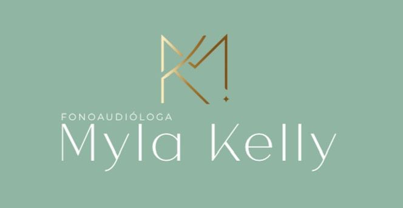
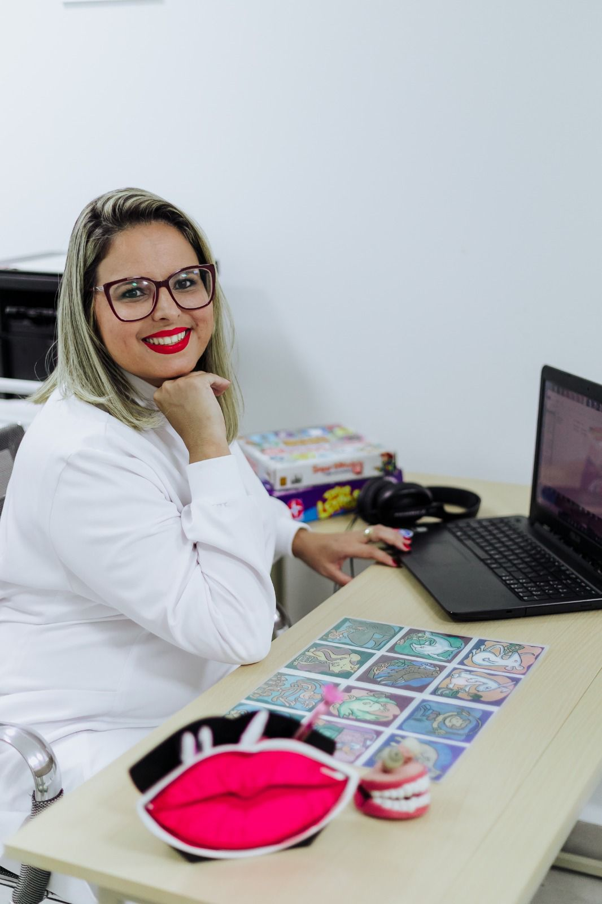
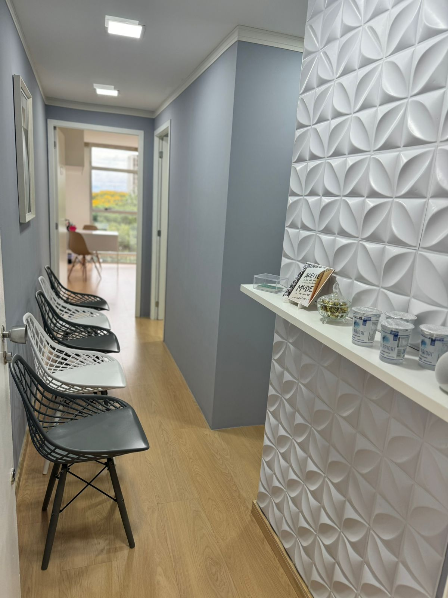
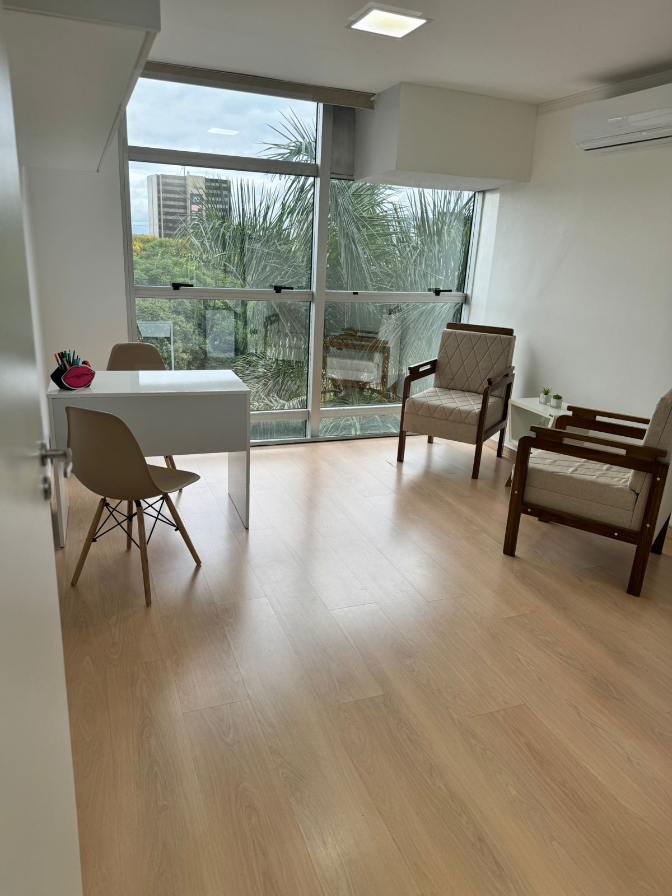
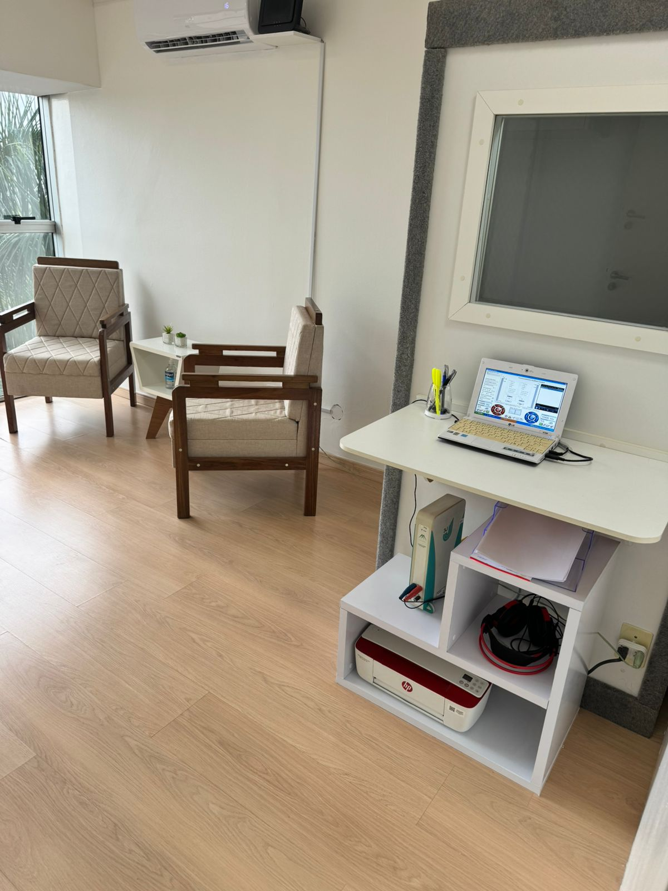
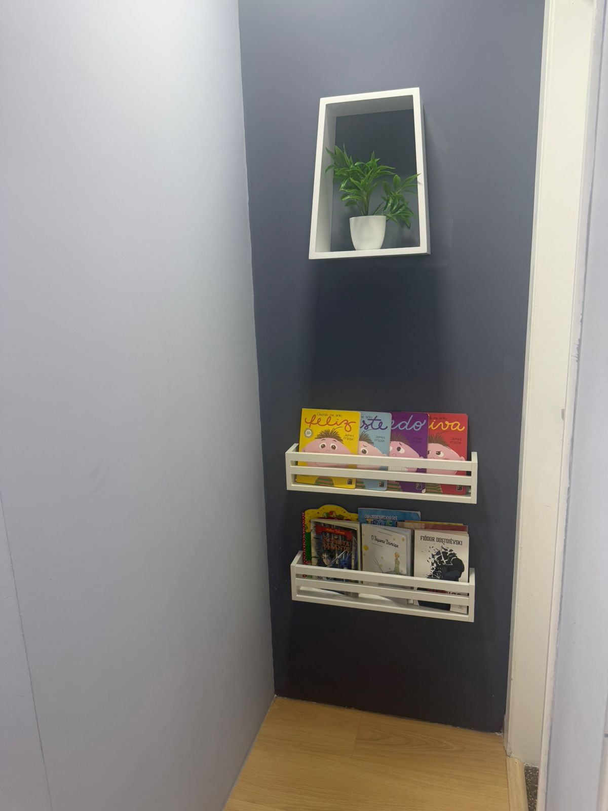
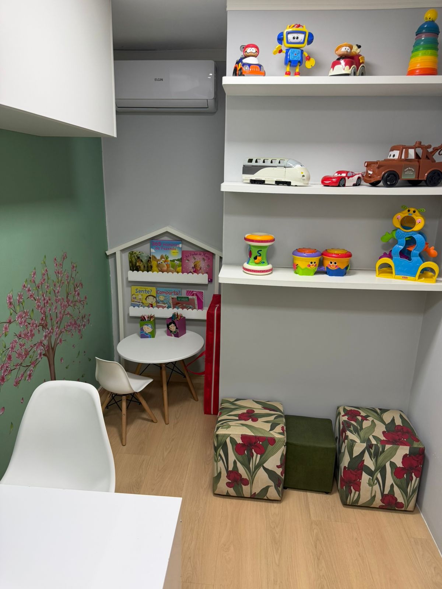

Excelência em atendimento humanizado e especializado, oferecendo acompanhamento personalizado com foco em desenvolvimento, funcionalidade e qualidade de vida.

Fonoaudióloga desde 2003 e CEO da Clínica Fonovida.
Minha trajetória profissional teve início na educação. Sou PROFESSORA formada pela Escola Normal de Brasília desde 1999, experiência que ampliou meu olhar para o desenvolvimento humano e, posteriormente, fortaleceu minha atuação na Fonoaudiologia.
Em 2003, graduei-me em Fonoaudiologia. Especializei-me em Educação Especial pela Faculdade Michelangelo e realizei aprimoramentos nas áreas de Processamento Auditivo Central (CEFAC), Linguagem Infantil (TechKnowledge) e Eletroestimulação (Fono Cursos).
Mantenho atualização contínua, fundamentando minha prática em evidências científicas e nas necessidades individuais de cada paciente, com foco no desenvolvimento da comunicação, da linguagem, da motricidade oral, da aprendizagem e das neurodivergências.
Acredito em um atendimento humanizado, acolhedor e individualizado, no qual a escuta, o vínculo terapêutico e o cuidado especializado são essenciais para transformar desafios em conquistas, potencializando o desenvolvimento e a qualidade de vida de cada paciente.
Atendimentos pensados para o cuidado integral da sua comunicação e aprendizagem
Treinamento Auditivo Acusticamente Controlado para potencializar as habilidades de processamento e discriminação dos sons da fala.
Avaliação e intervenção no Transtorno do Processamento Auditivo Central, com abordagem individualizada e baseada em evidências.
Desenvolvimento das habilidades cognitivas essenciais como atenção, memória de trabalho, planejamento e controle inibitório.
Avaliação e tratamento das funções orais como deglutição, mastigação, respiração e articulação dos sons da fala.
Atendimento especializado para crianças e adultos com autismo, síndrome de Down, TDAH e outras condições do neurodesenvolvimento.
Intervenção fonoaudiológica para dislexia, discalculia, disgrafia, dificuldades de alfabetização e outras barreiras de aprendizagem.
Avaliações diagnósticas precisas para embasar o seu tratamento
Avaliação auditiva para recém-nascidos e crianças, identificando precocemente alterações que possam comprometer o desenvolvimento da linguagem.
Exame para medir a capacidade auditiva, identificando graus e tipos de perda auditiva em crianças, adolescentes e adultos.
Avaliação detalhada das habilidades auditivas centrais, essencial para diagnóstico do TPAC e planejamento da intervenção terapêutica.
Atendemos o recém-nascido, criança, adulto e idoso, oferecendo um cuidado individualizado em todas as fases da vida.
Nosso processo inicia-se com um acolhimento cuidadoso durante a anamnese e, posteriormente, realizamos uma avaliação detalhada para traçar um planejamento terapêutico personalizado às necessidades e objetivos de cada paciente.
Os atendimentos podem ser realizados nas modalidades:
Aqui, cada paciente é cuidado de forma única.
Nossos atendimentos são pautados no compromisso, na ética, no atendimento humanizado, personalizado e acolhedor, sempre com foco na qualidade de vida e nos melhores resultados.
Um ambiente pensado para acolher, confortar e promover o melhor em cada atendimento.





Localizado no coração da Asa Norte — SRTVN Quadra 702, Conjunto "P", Sala 2053, Edifício Brasília Rádio Center
A satisfação dos meus pacientes é o meu maior reconhecimento
Doutora Mylla sempre foi muito atenciosa. Nos ajudou muito no tratamento, que foi muito efetivo. Bento iniciou as sessões com ela quando tinha apenas dois anos, e a forma lúdico e carinhosa dela encantaram ele, que amava ir na tia Mylla. Recomendamos muito a clínica ❤️
Sou cliente da Dra Myla e já havia passado por vários profissionais sem sucesso. Agora já estamos em fase final do tratamento de TPAC e a minha melhora na aprendizagem e nas minhas relações melhoraram tanto que só tenho que agradecer a ela. Gratidão dra por ter melhorado a minha vida! Eu e minha família estamos muito satisfeitos com o tratamento e com sua competência, carinho e dedicação.
Myla, queremos registrar aqui nossa admiração ao seu trabalho e profissionalismo. Você é uma profissional incrível, empática e extremamente sensível às necessidades dos pequenos e de suas famílias. Somos gratos a Deus por você ter cruzado nossos caminhos. Desejamos a você muito sucesso na sua jornada profissional e que você continue sendo luz na vida de muitos.
Prefere falar diretamente? Me chame no WhatsApp.